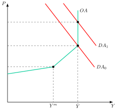
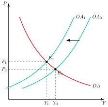
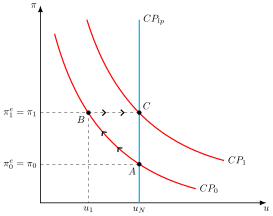
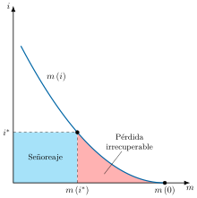
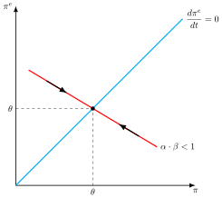
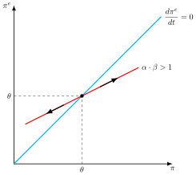

Apuntes para la oposición al Cuerpo de Diplomados Comerciales del Estado
10 La inflación: causas y a efectos sobre la eficiencia económica y el bienestar. Hiperinflación y deflación.
10.1 Introducción  1'
1'
El dinero es la vara con la que medimos precios, salarios y deudas. ¿Qué ocurre cuando esa vara cambia de longitud, y por qué cambia?
Una medida inestable distorsiona todo lo que mide. La inflación redistribuye la renta y la riqueza, altera las decisiones de los agentes y, en sus formas extremas, destruye la función del dinero o paraliza la economía. Por eso la estabilidad de precios es el objetivo principal del Banco Central Europeo.1
La exposición se organiza en tres partes:
Las causas de la inflación: monetarias, de demanda y de costes, el papel de las expectativas y la credibilidad, y las fiscales.
Sus efectos sobre la eficiencia y el bienestar, y la tasa de inflación óptima.
Los dos casos extremos: la hiperinflación y la deflación.
10.2 Las causas de la inflación 8'
La inflación es el aumento continuado y generalizado del nivel de precios.2 Por su intensidad, va desde la inflación moderada, de un solo dígito anual, hasta la hiperinflación, que se estudia más adelante. Por su origen, se distinguen varios tipos:
Inflación de demanda: la causada por un aumento continuado de la demanda agregada por encima de la capacidad productiva.
Inflación de costes: la causada por la subida del precio de un factor o de un bien intermedio importante sin que haya aumentado la demanda. Cuando la subida procede de los precios de importación, se habla de inflación importada.
Inflación inercial: la que persiste porque salarios y precios se fijan mirando a la inflación pasada, aunque haya desaparecido la causa que la originó.3
Inflación estructural: la que nace de rasgos de la estructura productiva, como las diferencias de productividad entre sectores o la rigidez de la oferta de ciertos bienes, y no de un exceso de dinero o de demanda.4
Inflación dual: la diferencia persistente entre la inflación de los sectores no expuestos a la competencia internacional, sobre todo los servicios, y la de los expuestos, sobre todo las manufacturas.5
En la práctica, estos tipos se combinan. Un shock de costes, por ejemplo, puede convertirse en inflación inercial si desencadena efectos de segunda ronda.
La inflación como fenómeno monetario
Para la teoría neoclásica, la inflación es un fenómeno monetario. Se apoya en la teoría cuantitativa del dinero, que Fisher (1911) formalizó con la ecuación de cambios, \(M\cdot V=P\cdot T\): la cantidad de dinero, \(M\), por su velocidad de circulación, \(V\), iguala al valor de las transacciones, el nivel de precios, \(P\), por su número, \(T\). Si la velocidad es estable y las transacciones vienen dadas por la renta de pleno empleo, el nivel de precios es proporcional a la cantidad de dinero, y la inflación procede de su crecimiento. El enfoque de Cambridge de Marshall (1871) y Pigou (1917) llega al mismo resultado desde la demanda de dinero, si la proporción de la renta que se desea mantener en efectivo es constante. El dinero es neutral: un aumento de la oferta monetaria solo eleva los precios.6
Wicksell (1898) distinguió el tipo de interés natural, el tipo real de equilibrio con precios y salarios flexibles, del tipo de interés de mercado, al que se obtienen los préstamos (Woodford 2003, 9). Si el tipo de mercado queda fijado por debajo del natural, la demanda crece, los precios suben y la mayor inflación esperada abarata aún más el crédito en términos reales, en un proceso acumulativo (Woodford 2003, 46). El dinero sigue siendo la causa, pero actúa a través del crédito y de la demanda.7
Keynes, ante la Gran Depresión y la incapacidad de los neoclásicos para explicarla, rompió con la separación entre lo real y lo monetario y llevó el análisis de la inflación a la demanda agregada.
Inflación de demanda e inflación de costes
Para Keynes, los problemas económicos derivan de la insuficiencia en la demanda, con lo que negaba el cumplimiento de la ley de Say, y de la existencia de desempleo involuntario –al contrario que los neoclásicos, que afirmaban que solo existía desempleo voluntario–. A corto plazo, la producción la determina la demanda efectiva, a través de las expectativas de ventas de los empresarios (Bajo Rubio y Monés 2000, 58-59). Nada garantiza que la renta que se ahorra vuelva al gasto a través de la inversión, de modo que puede darse una situación de insuficiencia de la demanda agregada, entendida como aquella situación en que la demanda agregada es tan débil que no permite absorber la producción asociada al pleno empleo8.
La teoría keynesiana de la inflación
Respecto a la inflación, Keynes reserva el nombre de inflación verdadera para la que aparece con pleno empleo, cuando un aumento de la demanda ya no eleva la producción y se traduce por completo en precios. Explica la inflación de demanda como consecuencia de un exceso de la demanda agregada, es decir, del gasto de los consumidores e inversores, sobre la capacidad productiva real.
Gráficamente, en un plano de precios y renta como el de la Figura 10.1, se representa la curva de oferta agregada, \(OA\), con un tramo más elástico para niveles de producción inferiores a los correspondientes al nivel de empleo asociado al salario mínimo, \(Y^{m}\), un tramo creciente –pero menos elástico que el anterior–, y un tramo vertical asociado a la producción de pleno empleo, \(\bar{Y}\). Si la demanda agregada se sitúa en el tramo vertical, \(DA_{0}\), se observa cómo los aumentos de la misma, \(DA_{1}\) solo dan lugar a inflación. Por consiguiente, en una situación de pleno empleo cualquier aumento de la demanda agregada provocará aumentos en los precios.

Como síntesis, Keynes ya observa que para disminuir el desempleo se precisa aumentar la demanda agregada, lo que, al acercarse al pleno empleo, provocará aumentos en los precios y por lo tanto inflación. Sin embargo, este aumento en precios es puntual y el análisis de la inflación requiere de un tratamiento dinámico. Al sistema keynesiano le faltaba, por tanto, una “ecuación perdida” que explicara cómo se reparte un aumento de la demanda entre más producción y más precios, y ese papel lo cumplirá la curva de Phillips, que se estudia más adelante.
La inflación de costes y los efectos de segunda ronda
La inflación de costes surge cuando sube el precio de un factor o de un bien intermedio importante, como el petróleo, sin que haya aumentado la demanda. A diferencia de la de demanda, la inflación sube mientras cae la producción, como ocurrió con las subidas del petróleo de 1974-1975 y 1979-1981 (Gordon 2012, 268).9
Gráficamente, en un plano de precios y renta como el de la Figura 10.2:
La subida de los costes desplaza la oferta agregada hacia la izquierda, de \(OA_{0}\) a \(OA_{1}\).
Con la misma demanda, el equilibrio pasa de \(E_{0}\) a \(E_{1}\): los precios suben de \(P_{0}\) a \(P_{1}\) y la producción cae de \(Y_{0}\) a \(Y_{1}\).
Suben a la vez los precios y el paro: es la estanflación, el caso contrario al de la inflación de demanda de la Figura 10.1. Si hay efectos de segunda ronda, esa subida puntual de los precios se convierte en inflación persistente.

El shock tiene una primera ronda: la subida del precio del bien encarecido y su traslado a los precios de los productos que lo usan, porque las empresas protegen sus márgenes. Si se queda ahí, eleva el nivel de precios una sola vez y la inflación vuelve a su ritmo anterior. Los efectos de segunda ronda aparecen cuando hogares y empresas intentan compensar, al fijar salarios y precios, la pérdida de renta real que les ha causado la mayor inflación (Koester y Grapow 2021). Los salarios suben para recuperar poder adquisitivo, las empresas trasladan esos costes a los precios y se inicia una espiral precios-salarios que convierte un shock transitorio en inflación persistente.10
Por eso la respuesta de política depende de la ronda. Contra la primera, la política monetaria apenas puede hacer nada, porque no elimina la causa de la subida y actúa con retraso. Pero debe impedir la segunda. Como explicó Schnabel (2022) en plena crisis energética, si se supiera que los shocks de oferta desaparecerán pronto sin efectos de segunda ronda, la política monetaria no tendría que reaccionar. Una sucesión de shocks, en cambio, eleva ese riesgo y obliga a actuar.11
La curva de Phillips como dinámica de la inflación
La curva de Phillips pone en movimiento el análisis de la inflación, porque relaciona el ritmo al que suben los precios con la situación de la economía. Su evolución es, sobre todo, la historia de cómo se incorporaron las expectativas.12
La síntesis neoclásica: la curva de Phillips
Phillips (1958) encontró para el Reino Unido una relación inversa y no lineal entre la tasa de variación de los salarios nominales y la tasa de paro. La síntesis neoclásica la incorporó como la “ecuación perdida” del modelo IS-LM, porque permitía repartir un aumento de la demanda entre más producción y más precios.13
Posteriormente, Samuelson y Solow (1960) reformulan la curva de Phillips en términos de inflación de precios y desempleo. La relación negativa entre inflación de precios y tasa de desempleo se justifica mediante los siguientes supuestos:
Las empresas fijan sus precios mediante el establecimiento de un margen o mark-up constante, \(\mu\), sobre los costes laborales unitarios, \(C_{L}\), que son el salario nominal, \(W\), dividido por la productividad media del trabajo, \(A\), definida en el supuesto siguiente: \[P=\left(1+\mu\right)\cdot C_{L} \tag{10.1}\]
Se asume una función de producción lineal, que depende únicamente del trabajo, \(L\), siendo \(Y\) la producción: \[Y=A\cdot L \tag{10.2}\] donde \(A\) representa la productividad media del trabajo.
Asumiendo estas hipótesis, y si la productividad del trabajo, \(A\), se mantiene constante,14 la tasa de crecimiento de los salarios nominales, \(\pi^{W}\), es igual a la inflación de precios: \[\pi^{W}=\dfrac{\dot{W}}{W}=\dfrac{\dot{P}}{P}=\pi \tag{10.3}\] y como la curva de Phillips original es \(\pi^{W}=f\left(u\right)\), con \(f'\left(u\right)<0\), siendo \(u\) la tasa de paro, la inflación de precios pasa a ser también una función decreciente del desempleo: \[\pi=f\left(u\right),\quad f^{'}\left(u\right)<0 \tag{10.4}\]
Así, la curva ofrecía a los gobiernos un menú de combinaciones: podían reducir el paro a cambio de más inflación, y una política de demanda sostenida mantendría el desempleo bajo mientras durara. La estanflación de los años setenta, en la que tras las subidas del petróleo crecieron a la vez el paro y la inflación, mostró que esa relación no era estable.
La crítica monetarista: la tasa natural de paro
Friedman (1968) criticó que la curva no distinguiera entre salarios nominales y reales, su “defecto básico”: daba por hecho que todos esperaban precios estables, pasara lo que pasara con los precios efectivos, lo que equivale a suponer ilusión monetaria (Friedman 1968, 8). A trabajadores y empresas les importa el salario real, así que negocian el nominal según la inflación que esperan, \(\pi^{e}\), y la curva debe ampliarse con las expectativas. Además, existe una tasa natural de paro, \(u_{N}\), que es la que “generaría el sistema walrasiano de ecuaciones de equilibrio general” si incorporara las características estructurales de los mercados de trabajo y de bienes, como sus imperfecciones o los costes de buscar empleo y de cambiar de lugar (Friedman 1968, 8).15
Así, la curva de Phillips ampliada con expectativas, en términos de precios, se podría expresar como la inflación esperada más un término proporcional a la diferencia entre la tasa natural de paro y la tasa de paro: \[\pi=\pi^{e}+\phi\cdot\left(u_{N}-u\right) \tag{10.5}\] donde \(\phi\) recoge la sensibilidad de la inflación a la brecha entre ambas tasas de paro. Por lo tanto, si la tasa de desempleo es inferior a la tasa natural de paro, la inflación será superior a la esperada.16
Así, la curva de Phillips se puede explicar como el resultado de fallos de predicción en la inflación esperada. Para ello, Friedman supone que los trabajadores forman sus expectativas según la hipótesis de expectativas adaptativas (HEA), de modo que su inflación esperada será igual a la esperada en el período anterior corregida por el error de predicción, \(\pi_{t}-\pi^{e}_{t}\), que cometieron \[\pi^{e}_{t+1}=\pi^{e}_{t}+\beta\left(\pi_{t}-\pi^{e}_{t}\right) \tag{10.6}\] donde \(\beta\) es un parámetro constante que refleja la velocidad con la que los agentes adaptan sus expectativas.
Gráficamente, en un plano de inflación y desempleo como el de la Figura 10.3, se representa la curva de Phillips, \(CP_{0}\), y un punto \(A\) correspondiente a la tasa natural de paro, \(u_{N}\), donde la inflación y la inflación esperada son de la misma magnitud, \(\pi^{e}=\pi_{0}\).

Si las autoridades aplican una política de demanda expansiva, los precios suben. Los trabajadores, que aún esperan \(\pi_{0}\), toman las subidas del salario nominal por subidas del real y trabajan más. El paro baja hasta \(u_{1}\) y la inflación sube hasta \(\pi_{1}\), en el punto \(B\) de la curva a corto plazo. Cuando revisan sus expectativas hasta \(\pi_{1}\), exigen más salario nominal, la curva se desplaza hasta \(CP_{1}\) y el paro vuelve a su tasa natural en el punto \(C\), con una inflación mayor que al principio. A largo plazo, la curva de Phillips es vertical en la tasa natural, que se obtiene uniendo \(A\) y \(C\).
El hecho de que la curva de Phillips sea vertical a largo plazo implica que:
Las políticas expansivas de demanda agregada solo podrán reducir el desempleo por debajo de la tasa natural de desempleo de forma temporal, cuando la inflación no sea totalmente anticipada.
Se cumple la hipótesis aceleracionista de la inflación, es decir, si las autoridades económicas tratan de mantener la tasa de paro por debajo de su nivel natural de forma permanente el resultado será una inflación creciente.17
La curva ampliada con expectativas adaptativas supone que los agentes solo miran al pasado y repiten sus errores. La nueva economía keynesiana la reformuló con expectativas racionales y con empresas que fijan sus precios de forma óptima, aunque no puedan cambiarlos en cualquier momento.
La curva de Phillips neokeynesiana
La curva de Phillips neokeynesiana se deriva de empresas en competencia monopolística que solo pueden revisar sus precios de vez en cuando, con una probabilidad constante en cada periodo, como en Calvo (1983). Como su precio puede quedarse fijo varios periodos, cada empresa lo fija pensando en los costes que espera en el futuro. El resultado es: \[\pi_{t}=\delta\cdot E_{t}\left\{ \pi_{t+1}\right\} +\kappa\cdot\tilde{y}_{t} \tag{10.7}\] donde \(E_{t}\left\{ \pi_{t+1}\right\}\) es la inflación que se espera hoy para el periodo siguiente, \(\delta\) el factor de descuento, \(\tilde{y}_{t}\) el output gap, es decir, la diferencia entre la producción y la que habría con precios flexibles, y \(\kappa>0\) un parámetro que es menor cuanto más rígidos son los precios (Galí 2015, cap. 3). Resolviéndola hacia delante, la inflación de hoy depende del output gap actual y de los que se esperan en el futuro.18
En esta versión básica, estabilizar la inflación equivale a llevar la producción a su nivel eficiente, de modo que el banco central no se enfrenta a ninguna disyuntiva: es la “divina coincidencia” (Galí 2015, cap. 4). Si a la ecuación se le añade un shock de costes, \(u_{t}\), por ejemplo un cambio en los márgenes que desean las empresas, ya no es posible lograr a la vez una inflación nula y una producción eficiente, y el banco central tiene que repartir el ajuste entre ambas (Galí 2015, cap. 5).19
La consecuencia de política es que la credibilidad importa. El banco central puede contener la inflación no solo enfriando hoy la economía, sino también comprometiéndose a hacerlo en el futuro (Galí 2015, cap. 5). Su capacidad para explicar los datos, en cambio, siempre ha sido discutida, sobre todo porque no reproduce la persistencia de la inflación (Galí 2015, cap. 3).20
Credibilidad y sesgo inflacionista
Antes de la nueva economía keynesiana, la nueva macroeconomía clásica había introducido la hipótesis de expectativas racionales (HER) y criticado la HEA de Friedman porque permite al Gobierno “engañar” sistemáticamente a los agentes económicos a corto plazo. Bajo HER, los agentes ya no cometen errores sistemáticos porque utilizan eficientemente toda la información de la que disponen. Por lo tanto, el valor esperado de las variables económicas se halla mediante la esperanza de las variables condicionada a toda la información disponible en el momento de formular las expectativas, \(\Omega_{t-1}\), utilizando eficientemente dicha información
\[P^{e}_{t}=\mathbb{E}\left(P_{t}|\Omega_{t-1}\right) \tag{10.8}\] Por lo tanto, el valor de la variable en el momento \(t\) será igual al valor esperado de la variable más un término de error o ruido blanco \[P_{t}=P^{e}_{t}+\varepsilon_{t} \tag{10.9}\]
Lucas (1972) mostró que, si los productores no observan bien el nivel general de precios, solo los cambios no observados de la demanda afectan a la producción, mientras que los observados solo mueven los precios. Por tanto, la política monetaria solo puede estabilizar la producción si el banco central dispone de información que no tienen los agentes (Romer 2019, 298 y 300). De ahí la proposición de ineficacia (o de inefectividad) de Sargent y Wallace (1975): con expectativas racionales y precios flexibles, las políticas de demanda anticipadas no son eficaces ni siquiera a corto plazo, y para reducir el paro de forma duradera hay que recurrir a políticas de oferta que bajen la tasa natural.
Aunque no haya disyuntiva a largo plazo, puede haber un sesgo inflacionista. Kydland y Prescott (1977) mostraron que la política óptima de baja inflación es inconsistente en el tiempo, si la producción natural es inferior a la socialmente deseable. Si el público espera poca inflación, al banco central le conviene sorprenderle con una expansión para llevar la producción por encima de su nivel natural. Como el público conoce ese incentivo, no espera poca inflación, y el resultado de la discrecionalidad es más inflación sin más producción (Romer 2019, 630-31).21
Las soluciones buscan dar credibilidad al compromiso de baja inflación:
Reglas en lugar de discrecionalidad, como proponían Kydland y Prescott.
La delegación en un banquero central conservador, que aborrece la inflación más que la sociedad (Rogoff 1985). Reduce la inflación media, pero responde peor a los shocks, de modo que hay un grado óptimo de conservadurismo (Romer 2019, 636-37).
La independencia del banco central, que entre los países industrializados se asocia a una inflación más baja (Romer 2019, 638).22
Es la misma lección que la de la curva de Phillips neokeynesiana: la inflación depende de lo que el público espera, y lo que espera depende de que el banco central sea creíble.23
Las causas fiscales
Detrás de muchas inflaciones hay un problema fiscal. Un Estado que no cubre su déficit con impuestos ni con deuda acaba recurriendo a la emisión de dinero y obtiene señoreaje, el ingreso que logra el Estado al emitir dinero, a costa de la inflación, como se verá al estudiar la hiperinflación.24 Pero la política fiscal puede generar inflación aunque el banco central no imprima dinero hoy:
La desagradable aritmética monetarista de Sargent y Wallace (1981): si la autoridad fiscal fija una senda de déficits y el tipo de interés real de la deuda supera el crecimiento de la economía, el banco central que frena hoy la inflación con una política restrictiva provocará más inflación en el futuro, porque tendrá que monetizar una deuda mayor (Sargent 2013, 163).25
La teoría fiscal del nivel de precios: son las variables fiscales, y no la cantidad de dinero, las que determinan el nivel de precios. La restricción presupuestaria intertemporal del Estado actúa como la condición que lo fija (Walsh 2017, 162-63). Si el gobierno rebaja los impuestos de forma permanente sin recortar el gasto, el nivel de precios tiene que subir hasta que el valor real de la deuda vuelva a igualar el valor descontado de los superávits futuros (Walsh 2017, 167).
Por eso la estabilidad de precios exige que la política fiscal respalde a la monetaria.26
10.3 Efectos sobre la eficiencia y el bienestar 6'
Los efectos de la inflación sobre la eficiencia y el bienestar dependen sobre todo de que los agentes la anticipen o no. Si la anticipan y pueden trasladarla a sus contratos, los tipos de interés nominales, los salarios y los tramos de los impuestos se ajustan a la inflación esperada, y sus costes son pequeños. Si no la anticipan, o no pueden trasladarla, aparecen además efectos redistributivos y de incertidumbre mucho más graves.27 Por eso se estudiarán primero los costes de una inflación anticipada, después los de una inflación no anticipada y, por último, los beneficios de una inflación moderada y la tasa de inflación que sería óptima.
Costes de la inflación anticipada
La inflación anticipada es la que los agentes prevén correctamente y pueden recoger en sus contratos. Aun así, tiene costes reales:
Costes de suela de zapato: son los costes en tiempo y en recursos de acudir más a menudo al banco para convertir otros activos en efectivo. El dinero no rinde intereses y su coste de oportunidad es el tipo de interés nominal, \(i\), que, según la ecuación de Fisher, es igual al tipo de interés real, \(r\), más la inflación esperada, \(\pi^{e}\). Cuanto mayor es la inflación, más cuesta mantener efectivo, y los agentes reducen sus saldos y multiplican las visitas al banco.28
Costes de menú: son los costes de cambiar los precios nominales, como imprimir nuevas cartas, etiquetas y catálogos, reprogramar máquinas y dedicar tiempo a decidir y comunicar los nuevos precios. Con más inflación, las empresas tienen que cambiarlos más a menudo. Además, como no todas los cambian a la vez, los precios relativos se distorsionan y dejan de ser una buena señal de la escasez relativa de los bienes.29
Distorsiones fiscales: si los tramos del impuesto sobre la renta no se actualizan con la inflación, el aumento de la renta nominal lleva al contribuyente a tramos con tipos más altos aunque su renta real no haya crecido. Es la progresividad en frío. En sentido contrario, si los impuestos se cobran con retraso respecto al momento en que se genera la obligación, la inflación reduce el valor real de lo recaudado. Es el efecto Olivera-Tanzi.30
Pérdida de competitividad exterior: si la inflación de un país supera a la de sus socios comerciales y el tipo de cambio nominal no lo compensa, su tipo de cambio real se aprecia y sus productos se encarecen frente a los extranjeros.
El coste de economizar en saldos monetarios, origen de los costes de suela de zapato, puede medirse gráficamente. En un plano con los saldos reales en abscisas y el tipo de interés nominal en ordenadas como el de la Figura 10.4:
La demanda de saldos reales, \(m\left(i\right)\), es decreciente: cuanto mayor es el tipo nominal, menos dinero se mantiene.
Con un tipo nominal nulo los agentes mantienen \(m\left(0\right)\) y su excedente es máximo.
Con un tipo positivo, \(i^{*}\), solo mantienen \(m\left(i^{*}\right)\) y pierden el excedente que queda bajo la curva entre 0 e \(i^{*}\).
Una parte de esa pérdida, el rectángulo \(i^{*}\cdot m\left(i^{*}\right)\), es el ingreso que obtiene el Estado por emitir un dinero que no paga intereses, una transferencia. Solo el resto, el área bajo la curva entre \(m\left(i^{*}\right)\) y \(m\left(0\right)\), es una pérdida irrecuperable (Walsh 2017, 62-63).31

Mientras la inflación es baja, estos costes son pequeños, pero crecen con ella. Lo que de verdad pesa es que la inflación no se anticipe.
Costes de la inflación no anticipada
La inflación no anticipada es la que se desvía de la que los agentes esperaban al firmar sus contratos. A los costes anteriores añade otros más graves:
Redistribución de la renta y la riqueza: reduce el valor real de los activos y pasivos fijados en términos nominales y traslada riqueza de los acreedores a los deudores, y de quienes perciben rentas fijas en términos nominales a quienes no. Por ejemplo, si un prestamista espera una inflación del 6 % y fija un tipo nominal del 16 % para obtener un 10 % real, pero la inflación resulta ser del 9 %, su tipo real se queda en el 7 % y pierde tres puntos de poder adquisitivo a favor del deudor.32 El sector público, gran deudor, sale ganando, porque el valor real de su deuda disminuye.33 Además, el dinero nuevo no llega a todos a la vez: quienes lo reciben primero lo gastan antes de que suban los precios y salen ganando, mientras que quienes tienen rentas fijas, o que tardan en ajustarse, soportan la subida sin haber recibido nada. Es el efecto Cantillon.34
Incertidumbre y peor asignación de los recursos: la variabilidad de los precios relativos aumenta con la inflación, y a los agentes les cuesta distinguir los cambios de precios relativos de los del nivel general, por lo que los recursos se asignan peor. Para protegerse, desvían su ahorro hacia activos reales como la vivienda, la tierra o el oro, acortan la duración de los contratos y recurren a préstamos a tipo variable. Todo ello reduce la inversión en capital fijo.35
Menor crecimiento: la evidencia es clara para las inflaciones altas. Bruno y Easterly (1998) encontraron que el crecimiento cae con fuerza durante las crisis de inflación, que definieron como periodos de inflación por encima del 40 % anual, y se recupera después. Por debajo de ese umbral no hallaron una relación consistente.
Estos costes explican que los bancos centrales busquen una inflación baja y estable. Pero no una inflación nula, porque una inflación moderada también tiene beneficios.
Beneficios de una inflación moderada
Una inflación baja y estable también tiene ventajas, que explican por qué ningún gran banco central busca una inflación nula:
Efecto lubricante en el mercado de trabajo: los salarios nominales casi nunca bajan. Con algo de inflación, los salarios reales de los sectores en declive pueden caer sin recortar los nominales, y el mercado de trabajo se ajusta con menos paro.36
Margen frente al límite inferior de los tipos de interés: el tipo de interés nominal no puede bajar mucho de cero, porque los agentes siempre pueden guardar efectivo. Con una inflación positiva, el tipo nominal habitual es más alto y el banco central tiene más margen para bajarlo, e incluso para llevar los tipos reales a terreno negativo, en una recesión.37
Ingresos públicos: el señoreaje y el impuesto inflacionario financian al sector público, sobre todo donde el sistema fiscal es débil, y la inflación no anticipada reduce el valor real de la deuda ya emitida.38
Seguro contra la deflación: un objetivo de inflación positivo aleja el riesgo de caer en una deflación, cuyos costes, como se verá, pueden ser mayores que los de una inflación moderada.
La inflación óptima
La tasa de inflación óptima es la que maximiza el bienestar a largo plazo, y su valor depende de qué fricción nominal se tenga en cuenta.
La regla de Friedman: si la única fricción es que el dinero se demanda para hacer transacciones, lo óptimo es que su coste de oportunidad, el tipo de interés nominal, \(i\), sea nulo. Como el tipo nominal es igual al tipo real, \(r\), más la tasa de inflación, \(\pi\), ello exige una inflación negativa igual al tipo de interés real cambiado de signo: \[i^{*}=0\;\Rightarrow\;\pi^{*}=-r\] Con un tipo real positivo, la regla recomendaría una deflación de esa misma magnitud, muy lejos de los objetivos de los bancos centrales.39
Las distorsiones fiscales: Phelps (1973) objetó que, si el Estado solo dispone de impuestos distorsionantes, el impuesto inflacionario debería formar parte de la imposición óptima, y la inflación óptima sería positiva. Sin embargo, la literatura posterior encontró que la regla de Friedman sigue siendo óptima en la mayoría de los modelos aun con impuestos distorsionantes.40
Las rigideces nominales: con precios rígidos a la Calvo, la inflación hace que las empresas que pueden revisar su precio lo fijen distinto de las que no pueden, y los precios relativos se dispersan sin que haya cambiado la escasez relativa de los bienes. La inflación óptima pasa a ser nula, porque con estabilidad de precios esa distorsión desaparece (Goodfriend y King 1997).
En conjunto, Schmitt-Grohé y Uribe (2011) concluyeron que las teorías situaban la inflación óptima entre menos el tipo de interés real y cifras apenas superiores a cero, mientras que los objetivos de los bancos centrales se concentran en el 2 %. Para cubrir esa diferencia se suelen invocar tres argumentos: el margen frente al límite inferior de los tipos, la rigidez a la baja de los salarios nominales y el sesgo al alza del índice de precios por las mejoras de calidad que no recoge. Según estos autores, ninguno de los tres basta, por sí solo, para justificar un objetivo del 2 %.41 El 2 % es, por tanto, una elección prudente más que un resultado teórico, y el debate sigue abierto.
10.4 Hiperinflación y deflación 4'30"
La inflación moderada que se ha estudiado hasta aquí tiene dos extremos que la teoría trata aparte, porque sus mecanismos y sus costes son distintos: la hiperinflación, en la que los precios se disparan, y la deflación, en la que caen.
Hiperinflación
La hiperinflación es un episodio en el que los precios suben más de un 50 % al mes. El umbral lo fijó Cagan (1956), y el episodio termina cuando la inflación mensual baja de ese nivel y se mantiene por debajo al menos un año.42 Un 50 % mensual equivale a multiplicar los precios por casi 130 en un año.
Para explicarla, Cagan partió de una demanda de saldos reales que solo depende de la inflación esperada, \(\pi^{e}\), porque en una hiperinflación los demás determinantes apenas cuentan frente a ella: \[\dfrac{M^{D}}{P}=\gamma\cdot e^{-\alpha\cdot\pi^{e}} \tag{10.10}\] con \(\gamma\) una constante positiva y \(\alpha\) la semielasticidad de la demanda de dinero respecto de la inflación esperada. Los agentes revisan sus expectativas de forma adaptativa, en proporción al error que acaban de cometer: \[\dfrac{d\pi^{e}}{dt}=\beta\cdot\left(\pi-\pi^{e}\right) \tag{10.11}\] con \(\beta>0\) la velocidad de ajuste de las expectativas y \(\pi\) la inflación efectiva. Si la cantidad de dinero crece a una tasa constante, \(\theta\), la inflación de estado estacionario es igual a \(\theta\), y ese estado es estable si \(\alpha\cdot\beta<1\).43
Si \(\alpha\cdot\beta>1\), la hiperinflación podría surgir sin que se acelerara la emisión de dinero, como una profecía que se cumple a sí misma. Pero Cagan estimó ambos parámetros y encontró que la condición de estabilidad se cumplía en la mayoría de los episodios. La hiperinflación no nacía de una inestabilidad de la economía privada, sino de un crecimiento del dinero cada vez más rápido (Blanchard y Fischer 1989, 209, n. 36).
Ese crecimiento tiene un origen fiscal. Un Estado que no puede financiar su déficit con impuestos ni con deuda recurre a la emisión de dinero, pero el señoreaje tiene un máximo: a partir de cierta inflación, la caída de la demanda de dinero reduce lo que recauda el impuesto inflacionario. Si el déficit supera ese máximo, ninguna inflación estable puede financiarlo, y la emisión se acelera.44
La historia ofrece casos extremos. En la Alemania de Weimar, la inflación mensual llegó al 29.500 % en octubre de 1923, y los precios se duplicaban cada 3,7 días. En Zimbabue alcanzó unos \(7{,}96\cdot10^{10}\) % mensual a mediados de noviembre de 2008, y los precios se duplicaban cada 24,7 horas. El récord lo tiene Hungría, con un \(4{,}19\cdot10^{16}\) % en julio de 1946, cuando los precios se duplicaban cada 15 horas (Hanke y Krus 2012, 13).45 Otros casos más recientes, como los de Argentina en 1989-1990 o Venezuela desde 2017, se estudian en el Tema 9 de la Parte B.
Las hiperinflaciones no terminan poco a poco, sino de golpe. Sargent (2013, cap. 3) estudió el final de las de Austria, Hungría, Polonia y Alemania en los años veinte y encontró que en todas se tomaron a la vez dos medidas. La primera fue crear un banco central independiente, obligado por ley a no prestar al Estado sin garantía. La segunda, cambiar el régimen fiscal. En cuanto el público entendió que el Estado ya no se financiaría con el banco central, la inflación se detuvo y el tipo de cambio se estabilizó, aunque la cantidad de billetes siguió creciendo deprisa durante un tiempo (Sargent 2013, 66).46
Deflación
La deflación es una caída generalizada y continuada del nivel de precios, es decir, una tasa de inflación negativa. No debe confundirse con la desinflación, que es una reducción de la tasa de inflación con los precios todavía al alza.
Sus efectos dependen de su origen:
Deflación de oferta: un aumento de la productividad, una mayor competencia o el abaratamiento de la energía y de las importaciones reducen los costes y los precios. Eleva el poder adquisitivo y no es preocupante, sobre todo si es transitoria.
Deflación de demanda: una demanda agregada insuficiente, a menudo tras una crisis financiera, hace caer los precios junto con la producción y el empleo. Es la peligrosa, porque puede alimentarse a sí misma.
La deflación de demanda se agrava por tres vías:
El aplazamiento del gasto: si los agentes esperan precios más bajos, retrasan el consumo y la inversión, y la demanda cae aún más.
El límite inferior de los tipos de interés: el tipo nominal no puede bajar mucho de cero, de modo que con deflación el tipo real, que es el nominal menos la inflación esperada, sube justo cuando la economía necesitaría que bajara. Eggertsson y Woodford (2003) lo cuantificaron en un modelo neokeynesiano. Supusieron que el tipo de interés natural, el tipo real que mantiene la producción en su nivel potencial, cae al \(-2\) % y que cada trimestre tiene una probabilidad de 0,1 de volver a su valor normal. En ese caso, un banco central con un objetivo de inflación nula no puede evitar una deflación del 10 % anual y un output gap negativo del 14 %. Con un objetivo del 2 %, en cambio, le basta con llevar el tipo nominal a cero para que el tipo real sea del \(-2\) % y el output gap se cierre (Eggertsson y Woodford 2003, 170-72).47 Su conclusión es que la salida está en la gestión de las expectativas. El banco central debe comprometerse a mantener el tipo en cero durante un tiempo después de que el tipo natural vuelva a ser positivo, para que los agentes esperen más inflación mientras dura la trampa (Eggertsson y Woodford 2003, 178).48
La deuda-deflación: la caída de los precios aumenta el valor real de las deudas. Fisher (1933) la situó en el centro de las grandes depresiones. Los deudores venden activos para pagar, eso hunde aún más los precios y “cuanto más pagan los deudores, más deben” (Fisher 1933, 344). Bernanke y Gertler (1989) le dieron fundamento con información asimétrica entre prestamistas y prestatarios. La caída de los precios reduce el patrimonio neto de los prestatarios, encarece su financiación y deprime la inversión, lo que amplifica la recesión (Bernanke y Gertler 1989, 14-15).49
Los casos recientes muestran que el riesgo es real. Japón tuvo su tipo de interés a un día a menos de 50 puntos básicos de cero desde octubre de 1995, con los precios a la baja, aunque su base monetaria más que se duplicó en relación con el PIB (Eggertsson y Woodford 2003, 139). La zona euro registró tasas de inflación negativas a mediados de 2009, entre diciembre de 2014 y marzo de 2015, en varios meses de 2016 y de agosto a diciembre de 2020, con un mínimo del \(-0{,}6\) % en julio de 2009 y en enero de 2015.50
10.5 Conclusiones  30"
30"
Como conclusión, la inflación es en última instancia un fenómeno monetario, pero cuánto cuesta y cómo se frena depende de algo menos tangible: de lo que el público espera y de si confía en quienes gestionan el dinero. Mantener firme la vara con la que medimos todo es, sobre todo, una cuestión de credibilidad.
Esa confianza se pone hoy a prueba en varios frentes:
Objetivo de inflación: ¿es el 2 % el número adecuado, o conviene más margen frente al límite inferior de los tipos de interés?
Deuda pública: con la deuda que dejó la pandemia, ¿puede la política fiscal acabar imponiendo la inflación al banco central?
Shocks de oferta: la energía, la transición ecológica y la geopolítica traerán nuevos shocks. ¿Cuándo debe el banco central mirar más allá de la primera ronda y cuándo actuar?
España en el euro: sin tipo de cambio propio, ¿cómo evitar que la inflación dual y los márgenes erosionen la competitividad?
Apéndice
10.A.1. La medición de la inflación
La inflación es la tasa de variación de un índice de precios. Los dos más usados son el índice de precios de consumo (IPC) y el deflactor del PIB, que se diferencian en tres aspectos (Mankiw 2008, 84-85):
Cobertura: el deflactor mide los precios de todos los bienes y servicios producidos, también los que compran las empresas y el Estado. El IPC, solo los que compran los consumidores.
Importaciones: el deflactor solo recoge los bienes producidos en el país. El IPC incluye los importados que compran los consumidores.
Ponderaciones: el IPC usa una cesta fija, es decir, es un índice de Laspeyres, y tiende a sobrestimar el aumento del coste de la vida, porque no recoge que los consumidores sustituyen los bienes que más se encarecen. El deflactor usa una cesta variable, es un índice de Paasche, y tiende a subestimarlo.
En la zona euro, la referencia del BCE para medir la inflación es el índice armonizado de precios de consumo (IAPC), que elabora Eurostat con la misma metodología en todos los países (BCE 2026). Para separar la tendencia de las oscilaciones pasajeras se usa la inflación subyacente, que el INE define como el índice general sin alimentos no elaborados ni productos energéticos (INE 2025).51
Los índices de precios de consumo tienden a sobrestimar la inflación. La Comisión Boskin (1996) estimó que el IPC de Estados Unidos la sobrestimaba en 1,1 puntos al año en 1995-1996, con un intervalo plausible de 0,8 a 1,6 puntos. Algo menos de la mitad, 0,5 puntos, se debía a la sustitución entre bienes y entre establecimientos. El resto, 0,6 puntos, a la dificultad de recoger los cambios de calidad y los productos nuevos (Gordon 2006, 3-4).52 Este sesgo es uno de los argumentos que se han dado para fijar un objetivo de inflación algo superior a cero, como se vio al estudiar la inflación óptima.
10.A.2. La teoría neoclásica de la inflación
El modelo neoclásico explica por separado los fenómenos de inflación y el desempleo. Se basa en tres pilares:
El nivel de empleo se determina por la interacción de la oferta y la demanda de trabajo y los precios y salarios, que se asumen flexibles, actúan como mecanismo de ajuste.
Se cumple la ley de Say, según la cual la oferta crea su propia demanda al distribuirse vía rentas todos los ingresos generados por la venta de la producción.
El dinero solo es un medio de pago, se cumple la teoría cuantitativa del dinero, por lo que existe una dicotomía entre el sector real y el sector monetario.
En cuanto a la teoría neoclásica de la inflación, existen diversos enfoques explicativos basados en la teoría cuantitativa del dinero, que asocia la subida general de precios a variaciones en la masa monetaria. No obstante, los más importantes son los de Fisher y el enfoque de saldos de caja de Cambridge.
La teoría de Fisher (1911) parte de la identidad de la ecuación de cambio, que establece que la cantidad de dinero, \(M\), por la velocidad de circulación de este, \(V\), es decir, el número de veces que cambia de manos, debe ser igual al valor de las transacciones, definido como el producto de los precios, \(P\), por el número de transacciones, \(T\): \[M\cdot V=P\cdot T \tag{10.12}\]
A partir de 10.12, Fisher formula tres hipótesis:
La cantidad de dinero se determina de forma exógena por la oferta de dinero.
El número de transacciones está dado por la renta de pleno empleo.
La velocidad de circulación cambia lentamente y es independiente del resto de variables, por lo que se asume que es constante.
De esta manera se obtiene \[P=\dfrac{V}{\bar{T}}\cdot M \tag{10.13}\] lo que implica que la inflación es provocada por los aumentos de la cantidad de dinero.
Por otro lado, en el enfoque de Cambridge autores como Marshall (1871) y Pigou (1917) consideran que la demanda de dinero, \(M^{D}\), es proporcional a la renta nominal, el nivel de precios, \(P\), por la renta real, \(Y\): \[M^{D}=k\cdot P\cdot Y \tag{10.14}\] ya que los agentes desean mantener un porcentaje, \(k\), de su renta nominal como saldos de caja.
En este contexto, si la masa monetaria aumentase los individuos dispondrán de más saldos monetarios y gastarán más para disminuir la proporción al saldo normal, por lo que aumentarán los precios en el proceso.
En general, los economistas de la escuela de Cambridge asumirán que \(k\) es constante, con lo que obtienen una expresión equivalente a la de Fisher.
Las principales conclusiones de los neoclásicos son que el dinero va a ser neutral y aumentos en la oferta monetaria van a producir aumentos en los niveles de precios.
Sin embargo, Wicksell completará esta teoría y Keynes la criticará.
Wicksell (1898) completó esta visión al explicar cómo actúa el dinero sobre los precios a través del crédito, y para ello distinguió dos tipos de interés:
El tipo de interés natural, que es el tipo real de equilibrio con precios y salarios flexibles, dados los factores reales (Woodford 2003, 9).
El tipo de interés de mercado, al que se conceden los préstamos.
Si el tipo de mercado se fija por debajo del natural, la demanda crece por encima de lo que permite la producción y los precios suben. Como la mayor inflación eleva las expectativas, el tipo real cae todavía más y la demanda vuelve a crecer, en un proceso acumulativo que no tiene límite mientras persista la diferencia. Si el tipo de mercado está por encima del natural, el proceso es el inverso (Woodford 2003, 46). La inflación sigue teniendo un origen monetario, pero se transmite a través del crédito y de la demanda agregada.53
10.A.3. Inflación de demanda e inflación de costes
Distinguir el origen de la inflación es crucial, porque las políticas para combatirla son muy distintas.
Inflación de demanda
Aparece cuando la demanda agregada crece más deprisa que la capacidad productiva: hay demasiado dinero persiguiendo muy pocos bienes. Sus causas habituales son:
Una política fiscal expansiva, con más gasto público o menos impuestos, que eleva la renta disponible.
Una política monetaria expansiva, con tipos de interés más bajos, que estimula el consumo y la inversión.
Una mayor confianza de los hogares y las empresas, que gastan más cuando esperan un futuro mejor.
La respuesta es enfriar la economía con una política monetaria contractiva, que sube los tipos de interés y encarece el crédito, o con una política fiscal contractiva.
Inflación de costes
Aparece cuando suben los costes de producción y se reduce la oferta. Sus causas habituales son:
El encarecimiento de materias primas como el petróleo, la energía o los alimentos, que se traslada a los precios finales.
Unos salarios que crecen por encima de la productividad, que las empresas trasladan a precios para mantener sus márgenes.
La ampliación de los márgenes por parte de empresas con poder de mercado.
Su tratamiento es más difícil. Si el banco central sube los tipos para frenarla, puede hundir la producción y agravar la estanflación sin atacar la causa. Por eso se recurre a políticas de oferta que eleven la productividad, que tardan en surtir efecto, y, en ocasiones, a controles de precios y salarios, que suelen ser ineficaces y distorsionan los mercados. En la práctica, ambos tipos se combinan, y eso dificulta saber cuál domina y qué medida aplicar.
Su reflejo en la curva de Phillips
La inflación de demanda corresponde a un movimiento a lo largo de la curva: más demanda, menos paro y más inflación. La de costes la desplaza: para cada tasa de paro, la inflación es mayor, de modo que suben a la vez el paro y la inflación, como tras las subidas del petróleo de los años setenta (Gordon 2012, 268). Las expectativas añaden un tercer elemento. Friedman y Phelps lo formularon con la tasa natural de paro. Modigliani y Papademos (1975) definieron la tasa de paro no inflacionista (NIRU, después NAIRU) como aquella por encima de la cual la inflación tiende a bajar, y señalaron que su existencia se deriva tanto de la curva de Phillips vertical a largo plazo como de la que no lo es (Modigliani y Papademos 1975, 142).54
10.A.4. La persistencia de la inflación
La curva de Phillips neokeynesiana es puramente prospectiva: la inflación pasada no influye en la actual. Sin embargo, en los datos la inflación es persistente, y las desinflaciones son graduales y costosas. Para recoger esa inercia se han propuesto tres enfoques.
La curva de Phillips híbrida
Galí y Gertler (1999), y Galí, Gertler y López-Salido (2001) para la zona euro, suponen que, de las empresas que pueden cambiar su precio, una parte lo fija de forma óptima y otra sigue una regla sencilla: toma el precio medio fijado el periodo anterior y lo corrige con la inflación pasada (Galí et al. 2001, 1246-47). El resultado es: \[\pi_{t}=\gamma_{b}\cdot\pi_{t-1}+\gamma_{f}\cdot E_{t}\left\{ \pi_{t+1}\right\} +\lambda\cdot\widehat{mc}_{t} \tag{10.15}\] donde \(\widehat{mc}_{t}\) es la desviación del coste marginal real respecto de su nivel de equilibrio y \(\gamma_{b}\) y \(\gamma_{f}\) miden el peso del componente retrospectivo y del prospectivo. Su estimación para la zona euro muestra que el componente retrospectivo es significativo pero pequeño, de modo que “el comportamiento prospectivo es dominante” en la dinámica de la inflación (Galí et al. 2001, 1257).
La rigidez de la información
Mankiw y Reis (2002) sustituyen la rigidez de los precios por la de la información. Cada empresa revisa su precio en cada periodo, pero solo una parte actualiza la información sobre la economía, así que muchas fijan precios con datos atrasados. Ese lento reparto de la información explica el ajuste gradual de los precios, los efectos reales de la política monetaria y la persistencia de la inflación (Walsh 2017, 200-203).
El modelo del triángulo
Gordon (2013) explica la inflación con tres elementos, que dan nombre al modelo: la inercia, la demanda y la oferta (Gordon 2013, 10): \[\pi_{t}=a\left(L\right)\cdot\pi_{t-1}+b\left(L\right)\cdot D_{t}+c\left(L\right)\cdot z_{t}+\varepsilon_{t} \tag{10.16}\] donde \(D_{t}\) es la presión de la demanda, medida por la brecha de paro o por el output gap, \(z_{t}\) son los shocks de oferta y \(a\left(L\right)\), \(b\left(L\right)\) y \(c\left(L\right)\) son polinomios en el operador de retardos. La inercia, \(a\left(L\right)\cdot\pi_{t-1}\), va más allá de las expectativas e incluye los contratos explícitos o implícitos de salarios y precios. A diferencia de la curva neokeynesiana, los shocks de oferta aparecen de forma explícita en la ecuación, y no en el término de error (Gordon 2013, 10).55
10.A.5. El aplanamiento de la curva de Phillips
La curva de Phillips parece haberse aplanado en los últimos tiempos, por lo que la disyuntiva entre inflación y desempleo es cada vez menos nítida. Blanchard (2016) concluyó que en Estados Unidos la curva seguía viva, porque el paro bajo seguía empujando la inflación al alza. Pero su pendiente se había reducido mucho desde los años ochenta: el efecto de una caída del paro sobre la inflación había pasado de 0,7 puntos a mediados de los setenta a unos 0,2 (Blanchard 2016, 1 y 3). Las posibles razones de este debilitamiento de la relación negativa entre inflación y desempleo son:
Anclaje de las expectativas de inflación: los agentes económicos confían cada vez más en que los bancos centrales situarán la inflación en el objetivo (normalmente, en torno al 2 %), así que un paro bajo ya no eleva sus expectativas56. Por eso, según Blanchard, el paro bajo se traduce hoy en una inflación algo más alta, pero no en una inflación cada vez mayor (Blanchard 2016, 1). La caída de la pendiente la explica sobre todo porque, con una inflación más baja, salarios y precios se revisan con menos frecuencia y responden menos a la situación del mercado de trabajo (Blanchard 2016, 3).
Mayor competencia internacional: la mayor competencia internacional propia de los últimos tiempos dificulta que las empresas aumenten sus precios y que los trabajadores aumenten sus demandas salariales.
Menor poder de negociación de los trabajadores: Stansbury y Summers (2020) sostienen que la pérdida de poder de negociación de los trabajadores explica que en Estados Unidos el paro haya podido bajar sin presiones inflacionistas, porque ha reducido la NAIRU, y otros autores la han relacionado directamente con el aplanamiento de la curva (Stansbury y Summers 2020, 39-40). Un menor poder de negociación de los trabajadores se traduce en menores reivindicaciones salariales, lo que, a su vez, disminuye la posibilidad de que haya efectos de segunda ronda que empujen la inflación. Entre las razones de esa pérdida de poder negociador suelen citarse:
Cambios tecnológicos: la tecnología permite a los empresarios de hoy sustituir trabajadores por máquinas si el coste laboral se dispara. Además, la “economía de plataformas” disminuye barreras a la entrada de trabajadores –por ejemplo, conductores en Uber o repartidores en Deliveroo–, por lo que aumenta la oferta de trabajo y los empresarios pueden presionar a la baja los salarios.
Menor poder sindical: el poder sindical ha disminuido en los últimos años debido a que: i) ha disminuido la afiliación, y ii) la negociación colectiva ha perdido relevancia tras la descentralización legal de las negociaciones salariales.
Menor ahorro: la tasa de ahorro de las familias ha disminuido tras la última crisis, por lo que no se pueden permitir perder el trabajo (aun cuando tengan esperanzas en encontrar otro en pocos meses).
Más vivienda en propiedad: la mayor tasa de viviendas en propiedad dificulta la movilidad territorial de los trabajadores, por lo que estos tienen más dificultades de amenazar al empresario con dejar su puesto de trabajo por otro puesto en otra zona geográfica.
Inmigración: la emigración a los países desarrollados de las últimas décadas aumenta la oferta de trabajo en estos países, generándose presiones a la baja en los salarios.
El aplanamiento de la curva de Phillips tiene múltiples implicaciones económicas. Quizás la más importante tenga que ver con la formulación de la política monetaria: las tensiones en el mercado de trabajo ya no son un predictor fiable de la inflación. Pero, como mostró la inflación de 2021-2023, la relación puede reaparecer con fuerza cuando el mercado de trabajo se tensa mucho.57
10.A.6. La inflación de 2021-2023
La subida de la inflación que empezó en 2021 fue la mayor y más persistente desde la Gran Inflación de los años setenta (Eggertsson y Kohn 2023 secc. 1). Combinó presiones de demanda y de costes:
De demanda: los estímulos fiscales y monetarios masivos con que se respondió a la recesión de 2020, y el desplazamiento del consumo de los servicios hacia los bienes duraderos, que desbordó la capacidad de muchas industrias.
De costes: las interrupciones en las cadenas de suministro, con cierres de fábricas, cuarentenas en los puertos y escasez de contenedores, y la subida de la energía y los alimentos, agravada por la invasión rusa de Ucrania.
Qué la causó
Blanchard y Bernanke (2023) estimaron para Estados Unidos un modelo de precios, salarios y expectativas. Contra lo que se temía al principio, la mayor parte de la subida se debió a shocks de precios dados los salarios: el encarecimiento de las materias primas, impulsado por una demanda fuerte, y los repuntes de precios sectoriales por cambios en la composición de la demanda con una oferta limitada. La tensión del mercado de trabajo no fue el motor principal, pero sus efectos sobre los salarios y la inflación son más persistentes (Blanchard y Bernanke 2023 resumen).58 Su extensión a once economías llegó a la misma conclusión: la inflación se debió sobre todo a las disrupciones de la oferta y a las subidas de los alimentos y la energía. A diferencia de los años setenta, esos shocks no tuvieron efectos persistentes, en parte gracias a la credibilidad de los objetivos de inflación. Al desvanecerse, el mercado de trabajo y los salarios ganaron peso, y en varios países, incluido Estados Unidos, volver al objetivo puede exigir algo más de paro (Blanchard y Bernanke 2024 resumen).
¿Salarios o beneficios?
En la zona euro, el debate se centró en el papel de los márgenes empresariales. Hansen, Toscani y Zhou (2023) descompusieron la variación del deflactor del consumo entre el primer trimestre de 2022 y el de 2023: los precios de importación explicaban en torno al 40 % y los beneficios internos en torno al 45 %. Los beneficios crecieron sobre todo en los sectores favorecidos por la subida de las materias primas o por los desajustes entre oferta y demanda, y las empresas trasladaron a precios algo más que el aumento de sus costes y salieron mejor paradas que los trabajadores, aunque los datos no muestran un aumento generalizado de los márgenes (Hansen et al. 2023 resumen). La Comisión Europea llegó a una conclusión parecida con el deflactor del PIB: en el último trimestre de 2022, los beneficios unitarios crecieron un 9,3 % interanual y aportaron 3,2 de los 5,8 puntos de crecimiento del deflactor, más que los costes laborales unitarios (Comisión Europea 2023, 29). Es el reverso de los efectos de segunda ronda: en esta fase, la presión interna vino más de los márgenes que de los salarios.59
El papel de la Reserva Federal
Eggertsson y Kohn (2023) sostienen que el nuevo marco de la Fed de agosto de 2020 introdujo un sesgo inflacionista por dos cambios: una función de pérdida asimétrica en el empleo, que solo penaliza que esté por debajo de su máximo, y un objetivo de inflación media también asimétrico (Eggertsson y Kohn 2023 resumen). Su forward guidance de septiembre de 2020 lo amplificó. La Fed se comprometió a mantener los tipos en cero hasta que el mercado de trabajo alcanzara el máximo empleo y la inflación hubiera subido al 2 % y fuera camino de superarlo moderadamente durante un tiempo (Reserva Federal 2020). Además, infravaloró la tensión del mercado de trabajo de 2021 (Eggertsson y Kohn 2023 resumen).
La no linealidad de la curva de Phillips
El retraso fue más costoso si la curva no es lineal: cuando el mercado de trabajo está muy tenso, la inflación responde con más fuerza a nuevas subidas de la ocupación (Eggertsson y Kohn 2023 secc. 6.2 y apéndice 3). Así, con datos de áreas metropolitanas de Estados Unidos, una reducción de un punto del paro elevaba la inflación 0,34 puntos antes de la pandemia, y esa pendiente se triplicó después.60 La curva que parecía plana en la década de 2010 puede volverse muy empinada cuando el empleo supera su máximo.61
En suma, igual que en la Gran Inflación de los años setenta, en la que a la demanda alimentada por el gasto de la guerra de Vietnam se sumaron las subidas del petróleo (Gordon 2012, 268), la inflación de la pandemia combinó demanda y costes. La diferencia, según Blanchard y Bernanke, es que esta vez la credibilidad de los bancos centrales evitó que los shocks de oferta se volvieran persistentes.
10.A.7. La inflación estructural
La inflación dual
La diferencia entre la inflación del sector protegido y la del expuesto, \(\pi_{S}-\pi_{E}=\dot{a}_{E}-\dot{a}_{S}\), es la inflación dual. Dentro de una unión monetaria determina la competitividad de cada país (Estrada y López-Salido 2001, 1). Para España, estos autores encontraron que en los años noventa pesaron tanto los márgenes como la productividad (Estrada y López-Salido 2001, 5).
El estructuralismo latinoamericano
Sunkel (1958), siguiendo a Noyola (1956), sostiene que en los países en desarrollo las causas de la inflación están en problemas básicos de desarrollo y en la estructura productiva (Sunkel 1958, 174). Distingue tres tipos de presiones inflacionarias:
Las básicas o estructurales, debidas a la rigidez de la economía, que en Chile eran el estancamiento de la oferta de alimentos frente a una demanda creciente, la incapacidad de diversificar las exportaciones, la escasa formación de capital y las deficiencias del sistema fiscal.
Las exógenas, como la subida de los precios de importación.
Las acumulativas, que genera la propia inflación (Sunkel 1958, 175-76).
Los mecanismos de propagación (el fiscal, el del crédito y el de ajuste de precios y rentas) no causan la inflación, pero la mantienen viva y la hacen acumulativa (Sunkel 1958, 175-77). De ahí su conclusión: la estabilidad solo se recupera eliminando las presiones estructurales, no conteniendo la demanda (Sunkel 1958, 176).62
10.A.8. El modelo de Cagan
Cagan (1956) parte de una demanda de saldos reales que depende solo de la inflación esperada, \(M^{D}/P=\gamma\cdot e^{-\alpha\cdot\pi^{e}}\), y de expectativas adaptativas, \(d\pi^{e}/dt=\beta\cdot\left(\pi-\pi^{e}\right)\), con la cantidad de dinero creciendo a una tasa constante, \(\theta\). En equilibrio, la oferta de saldos reales iguala a la demanda. Tomando logaritmos, con \(m\) y \(p\) los logaritmos de la cantidad de dinero y del nivel de precios: \[m-p=\ln\gamma-\alpha\cdot\pi^{e} \tag{10.18}\] Derivando respecto al tiempo, y como \(\dot{m}=\theta\) y \(\dot{p}=\pi\): \[\theta-\pi=-\alpha\cdot\dfrac{d\pi^{e}}{dt}=-\alpha\cdot\beta\cdot\left(\pi-\pi^{e}\right) \tag{10.19}\] Despejando la inflación efectiva: \[\pi=\dfrac{\theta-\alpha\cdot\beta\cdot\pi^{e}}{1-\alpha\cdot\beta} \tag{10.20}\] y sustituyendo en la regla de expectativas: \[\dfrac{d\pi^{e}}{dt}=\dfrac{\beta}{1-\alpha\cdot\beta}\cdot\left(\theta-\pi^{e}\right) \tag{10.21}\] El estado estacionario es \(\pi^{e}=\pi=\theta\). Si \(\alpha\cdot\beta<1\), el coeficiente de la ecuación anterior es positivo: cuando la inflación esperada está por debajo de \(\theta\), sube, y cuando está por encima, baja, de modo que el equilibrio es estable. Si \(\alpha\cdot\beta>1\), el signo se invierte y cualquier desviación se amplifica.
Gráficamente, en un plano con la inflación efectiva en abscisas y la esperada en ordenadas como el de la Figura 10.5:
La bisectriz recoge los puntos en que las expectativas no cambian, \(d\pi^{e}/dt=0\).
La relación entre ambas inflaciones es una recta que pasa por \(\left(\theta,\theta\right)\) con pendiente \(-\left(1-\alpha\cdot\beta\right)/\left(\alpha\cdot\beta\right)\).
Si \(\alpha\cdot\beta<1\), como en la Figura 10.5 (a), la recta tiene pendiente negativa y la economía converge hacia \(\left(\theta,\theta\right)\).
Si \(\alpha\cdot\beta>1\), como en la Figura 10.5 (b), tiene pendiente positiva y se aleja de él (Blanchard y Fischer 1989, 197).


Con expectativas racionales el resultado cambia de naturaleza. Sargent muestra que, con una demanda de dinero de este tipo, el nivel de precios de hoy depende de la cantidad de dinero que se espera desde ahora hasta un futuro indefinido (Sargent 2013, 24). Por eso basta un cambio creíble del régimen fiscal y monetario para frenar en seco una hiperinflación, aunque la cantidad de dinero siga creciendo un tiempo.63
Términos del glosario de este tema
31 términos · ver el glosario completo
Bibliografía
Artículo 127, apartado 1, del Tratado de Funcionamiento de la Unión Europea.↩︎
Su medición, con el IPC, el deflactor del PIB y la inflación subyacente, se estudia en el Apéndice 10.A.1.↩︎
Su análisis, con la curva de Phillips híbrida y el modelo del triángulo de Gordon, figura en el Apéndice 10.A.4. Algunos manuales la llaman también inflación estructural, en un sentido distinto del que se usa a continuación.↩︎
El modelo escandinavo y el estructuralismo latinoamericano se exponen en el Apéndice 10.A.7.↩︎
La intuición es que la productividad crece más deprisa en la industria que en los servicios. Si los salarios tienden a igualarse entre sectores, los servicios ven subir sus costes sin ganancias de productividad que los compensen, y sus precios suben más. Es la explicación de Balassa (1964) y Samuelson (1964). Véase Krugman et al. (2018, 467-68). Dentro de una unión monetaria, la inflación dual afecta a la competitividad del país (Estrada y López-Salido 2001, 1). Para España, estos autores encontraron que pesaron también los márgenes: en los años noventa, su contracción relativa en las manufacturas, o la falta de ajuste en los servicios, acentuó la inflación dual (Estrada y López-Salido 2001, 5).↩︎
El desarrollo de ambos enfoques figura en el Apéndice 10.A.2. La demanda de dinero se estudia en el Tema 5 de la Parte B.↩︎
La intuición es que, si pedir prestado cuesta menos de lo que rinde invertir, las empresas se endeudan y gastan más de lo que la economía puede producir, y los precios suben mientras dure esa diferencia.↩︎
Esta tesis surgió ante la incapacidad de la teoría neoclásica de explicar el desempleo de la Gran Depresión. De hecho, Keynes (1936, cap. 1) sostenía que los postulados de la teoría clásica solo son aplicables a un caso especial, y no al general. Es decir, que para Keynes el equilibrio de pleno empleo del enfoque neoclásico es un caso especial que corresponde a una situación en que la demanda agregada es suficientemente elevada como para absorber toda la producción.
Sin embargo, Keynes no será el primero en señalar que la ley de Say puede no cumplirse. De hecho, Malthus, autor clásico, ya había previsto esta posibilidad.↩︎
Las causas concretas de cada tipo de inflación y las políticas para combatirla se resumen en el Apéndice 10.A.3.↩︎
La intuición es que nadie quiere cargar con la pérdida: si cada grupo intenta trasladarla a otro, los precios siguen subiendo. Los efectos de segunda ronda son más probables cuando los salarios se indexan a la inflación pasada, y esa indexación hace más duraderos los shocks. Aun así, en la zona euro solo en torno al 3 % de los asalariados del sector privado tiene su salario indexado automáticamente a la inflación (Koester y Grapow 2021).↩︎
La inflación de 2021-2023 se analiza en el Apéndice 10.A.6.↩︎
Su papel en el análisis del desempleo, con la NAIRU y la histéresis, se estudia en el Tema 11 de la Parte B.↩︎
Lipsey (1960) le dio fundamento teórico a través del exceso de demanda en el mercado de trabajo. Su desarrollo figura en el Tema 11 de la Parte B.↩︎
Si la productividad crece, la inflación de precios es igual al crecimiento de los salarios menos el de la productividad. Por eso Samuelson y Solow (1960, 192) cifraban en el 2,5 % anual, el ritmo de crecimiento de la productividad de Estados Unidos, el aumento salarial compatible con la estabilidad de precios.↩︎
Su determinación y su relación con la NAIRU se estudian en el Tema 11 de la Parte B.↩︎
La intuición es que el paro solo baja mientras la inflación sorprende a los trabajadores: cuando dejan de equivocarse, el paro vuelve a su tasa natural y solo queda la inflación.↩︎
En palabras de Friedman, “siempre hay una disyuntiva temporal entre inflación y desempleo. No hay una disyuntiva permanente”. La temporal no se debe a la inflación en sí, sino a la inflación no anticipada (Friedman 1968, 11).↩︎
La intuición es que una empresa que sabe que su precio puede quedarse fijo varios periodos no mira solo a los costes de hoy. Si espera que la economía esté recalentada, sube ya el precio.↩︎
La intuición es que un shock de costes sube los precios sin que la economía esté recalentada. Para frenar la inflación hay que enfriarla, y para sostener la producción hay que tolerar más inflación. Es el dilema de la inflación de costes y de los efectos de segunda ronda.↩︎
Las variantes que añaden la inflación pasada (la curva de Phillips híbrida) o sustituyen la rigidez de precios por la de la información (Mankiw y Reis 2002) se exponen en el Apéndice 10.A.4.↩︎
La intuición es que el banco central hace una promesa que nadie se cree. El banco central anuncia que mantendrá la inflación baja, pero, una vez fijados los salarios, tiene la tentación de incumplirla, y los agentes, que lo saben, se protegen de antemano. Barro y Gordon (1983) formalizaron este resultado y estudiaron cómo la reputación puede sostener una inflación más baja. Su derivación figura en el Tema 22 de la Parte B.↩︎
Romer advierte de que esta evidencia tiene límites: la independencia se mide con índices cualitativos, y no está claro que la teoría prediga que más independencia produzca menos inflación (Romer 2019, 638).↩︎
Los regímenes de objetivos de inflación y el diseño institucional de la política monetaria se estudian en el Tema 6 de la Parte B. El anclaje de las expectativas y su efecto sobre la pendiente de la curva de Phillips se analizan en el Apéndice 10.A.5.↩︎
El impuesto inflacionario es la pérdida de valor real que la inflación impone a quienes tienen dinero, la inflación por los saldos reales, \(\pi\cdot M/P\). Solo coincide con el señoreaje en un estado estacionario sin crecimiento de la producción (Blanchard y Fischer 1989, 198).↩︎
La intuición es que la deuda que hoy evita imprimir dinero acumula intereses, y si el Estado no los cubre con impuestos acabará pagándolos con más dinero, y con más del que habría hecho falta al principio.↩︎
La dominancia fiscal y monetaria, el señoreaje, la aritmética desagradable y la teoría fiscal del nivel de precios se desarrollan en el Tema 9 de la Parte B.↩︎
Véase Bajo Rubio y Monés (2000, 341-42).↩︎
La intuición es que el dinero se desgasta en el bolsillo. Cada día que se guarda un billete pierde poder de compra, y para evitarlo se va más veces al banco, como si se gastaran las suelas de los zapatos. Bajo Rubio y Monés (2000, 342) subrayan que, salvo en épocas de inflación muy alta, este coste es pequeño.↩︎
Mankiw (1985) llevó los costes de menú a la macroeconomía. Con competencia imperfecta, unos costes de cambiar los precios muy pequeños para cada empresa pueden bastar para que no los ajuste, aunque esa rigidez tenga un coste social mucho mayor.↩︎
Olivera (1967) advirtió que, como el gasto público sigue a los precios más deprisa que los ingresos, la inflación genera por sí misma un déficit, y Tanzi (1977) mostró que, cuando los retrasos de cobro son grandes, la inflación reduce la recaudación real.↩︎
El cálculo se debe a Bailey (1956). Según la revisión de Gillman (1995), en Estados Unidos este coste se sitúa entre el 0,85 % y el 3 % del PNB real por cada punto del tipo nominal por encima de cero (Walsh 2017, 65).↩︎
Doepke y Schneider (2006) estimaron para Estados Unidos qué ocurriría si la inflación fuera cinco puntos mayor de lo esperado durante diez años. Con datos de 1989, los hogares ricos y mayores, los grandes tenedores de bonos, perderían entre el 5,7 % y el 15,2 % del PIB. Ganarían los hogares jóvenes de clase media con hipotecas a tipo fijo, y el sector público, entre el 5,2 % y el 13 % del PIB.↩︎
Cantillon (1755, pt. II, cap. 6) lo describió al estudiar la llegada de metales preciosos a un país: quienes reciben primero el dinero “aumentarán sin falta su consumo y elevarán el precio de todo”, y los perjudicados son “en primer lugar los terratenientes” y “todos los trabajadores o asalariados fijos que mantienen a sus familias con su salario”.↩︎
La intuición es que la inflación hace el trabajo que los salarios no hacen: en lugar de bajar el sueldo a nadie, basta con subirlo menos que los precios. Tobin (1972) mostró que, si los salarios nominales no pueden bajar, la curva de Phillips a largo plazo deja de ser vertical cuando la inflación es muy baja, de modo que una inflación demasiado baja se pagaría con un paro permanentemente mayor.↩︎
Por eso el BCE, en la revisión de su estrategia de julio de 2021, fijó un objetivo del 2 % a medio plazo, “simétrico”, de modo que las desviaciones por encima y por debajo son igual de indeseables, y advirtió que cerca del límite inferior de los tipos hace falta una política “especialmente contundente o persistente” (BCE 2021). El límite inferior de los tipos se estudia en el Tema 7 de la Parte B.↩︎
Su análisis se desarrolla en el Tema 9 de la Parte B.↩︎
La intuición es que producir dinero no cuesta casi nada, así que no tiene sentido que mantenerlo cueste: con un tipo nominal nulo, nadie desperdicia recursos en economizar efectivo. La regla se debe a Friedman (1969). Su derivación con el dinero en la función de utilidad figura en el Tema 5 de la Parte B.↩︎
Véase Schmitt-Grohé y Uribe (2011, 663-64).↩︎
Encontraron que, bajo la política óptima, el tipo nominal medio sería del 4,4 %, con una desviación típica de 0,9 puntos, de modo que tocar el límite inferior sería muy improbable, que la inflación necesaria para facilitar el ajuste de los salarios sería inferior a medio punto y que el sesgo de calidad, de unos 0,6 puntos anuales en Estados Unidos según la comisión del Senado de 1996, solo debería sumarse al objetivo en ciertos supuestos sobre qué precios son rígidos (2011, 655-57).↩︎
Es la definición que siguen Hanke y Krus (2012, 11) para catalogar los episodios conocidos.↩︎
La intuición es que la huida del dinero se alimenta a sí misma. Si los agentes esperan más inflación, demandan menos dinero, y con la misma oferta los precios suben más, lo que vuelve a elevar las expectativas. Cuando las expectativas reaccionan deprisa y la demanda de dinero es muy sensible a ellas, cada vuelta amplifica la anterior. La derivación y su representación gráfica figuran en el Apéndice 10.A.8. Véase también Blanchard y Fischer (1989, 197-98).↩︎
El señoreaje máximo se deriva en el Tema 5 de la Parte B. La financiación monetaria del déficit se estudia en el Tema 9 de la Parte B.↩︎
La cifra de Zimbabue no es oficial, porque el índice de precios dejó de publicarse en julio de 2008. Hanke y Kwok la estimaron a partir del precio de una acción que cotizaba a la vez en Harare y en Londres (Hanke y Krus 2012, 9). Sargent (2013, 24) recuerda que, en el año anterior a agosto de 1946, el nivel de precios húngaro se multiplicó por unos \(4\cdot10^{24}\), y que en ese mes toda la base monetaria del país valía menos de 25.000 dólares de 1946.↩︎
La intuición es que lo que alimenta la hiperinflación no es la cantidad de dinero en sí, sino un dinero que no tiene detrás impuestos futuros que lo respalden. Cuando cambian las reglas fiscales, ese respaldo reaparece y las expectativas se corrigen de inmediato.↩︎
La intuición es que, con un objetivo de inflación positivo, al llegar a cero los agentes siguen esperando inflación y el tipo real puede ser negativo. Con un objetivo nulo esperan deflación, y el tipo real queda por encima del natural. Es el margen frente al límite inferior que justifica un objetivo del 2 %.↩︎
Para ellos, “la clave para que la actuación del banco central combata eficazmente una recesión deflacionaria es la gestión de las expectativas” (Eggertsson y Woodford 2003, 147). Este compromiso es una forma de forward guidance. El límite inferior de los tipos y las políticas para salir de él se estudian en el Tema 7 de la Parte B.↩︎
La intuición es que la redistribución de deudores a acreedores no se compensa en el agregado. Los deudores, que son quienes invierten, pierden capacidad de endeudarse justo cuando más la necesitan. Es el mecanismo del acelerador financiero.↩︎
Índice armonizado de precios de consumo, tasa interanual de la zona euro de 19 países, según Eurostat (2026).↩︎
La intuición es que la energía y los alimentos frescos suben y bajan con shocks de oferta que suelen ser pasajeros. Al quitarlos se ve mejor la presión de fondo sobre los precios.↩︎
Diez años después, Gordon (2006) concluyó que, con lo que se sabía entonces, el sesgo de 1995-1996 debió de ser de 1,2 a 1,3 puntos.↩︎
Friedman tomó de aquí el adjetivo de su tasa natural de paro, por analogía con el tipo de interés natural de Wicksell (Woodford 2003, 9, n. 4).↩︎
El modelo del triángulo de Gordon reúne los tres elementos (inercia, demanda y oferta) en una sola ecuación: véase el Apéndice 10.A.4. La NAIRU se estudia en el Tema 11 de la Parte B.↩︎
La intuición es que la inflación de hoy se parece a la de ayer porque salarios y precios se fijan mirando hacia atrás. Solo se aparta de ella cuando la empujan la demanda o un shock de oferta. Por eso un shock de costes puede dejar inflación durante mucho tiempo si desencadena efectos de segunda ronda.↩︎
La intuición es que, si todo el mundo cree que la inflación volverá al 2 %, un año de paro bajo no hace que se espere más inflación para el año siguiente, y la espiral aceleracionista no arranca.↩︎
Véase el Apéndice 10.A.6.↩︎
La intuición es que los precios de la energía o de los bienes escasos suben y bajan deprisa, mientras que los salarios, una vez que suben, no bajan y siguen empujando los precios. Es el mecanismo de los efectos de segunda ronda.↩︎
La intuición es que, ante un shock de costes que afecta a todos, cada empresa puede subir sus precios sin perder clientes, porque las demás hacen lo mismo. De ahí la conclusión de Hansen, Toscani y Zhou: para que la inflación vuelva al objetivo en dos años con salarios que crecen en torno al 4,5 %, la participación de los beneficios tiene que volver a su media de 2015-2019, es decir, los márgenes deben absorber parte de la recuperación salarial (Hansen et al. 2023 resumen).↩︎
Hazell et al. (2022) y Cerrato y Gitti (2022), citados por Eggertsson y Kohn (2023 apéndice 3).↩︎
Véase el Apéndice 10.A.5.↩︎
Sunkel calificó de “desastrosa” la política de estabilización chilena de 1956-1957, porque había frenado la actividad a corto plazo y comprometido el desarrollo a largo (Sunkel 1958, 175).↩︎
La tasa de crecimiento del dinero que maximiza el señoreaje en este modelo, \(\theta^{*}=1/\alpha\), se deriva en el Tema 5 de la Parte B.↩︎